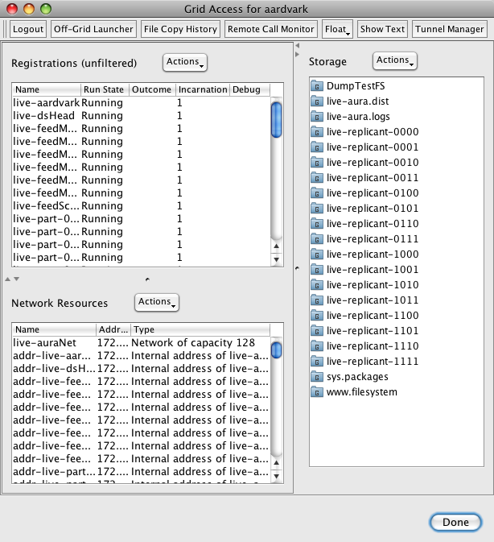

There are lots of challenges in building a good recommender system -
one challenge is dealing with the scale. A good recommender needs lots
of data - the more the better. The best recommenders - like those at
Amazon or Netflix have billions of taste data points for millions of
users.
Last.fm collects a half-billion
scrobbles in a month. More data is good - Amazon, Neflix and Last.fm
are known for their good recommendations and that is mainly because they
have so much good data. But dealing with this data can be a challenge.
Sites like Last.fm are having to become experts at dealing with
Big Data just so they can generate good recommendations.
Building a system that is ready to collect so much data and process it can be a challenge. It is certainly a challenge for Project Aura.
We want to build a system from the ground up that is ready for all of
this data. Building such a web scale system that is highly reliable,
fault tolerant and allows us to easily expand our computing capacity
without re-architecting the system is not easy. But luckily we have a
secret weapon that makes it easy (well, easier) to build a web-scale
recommender. That secret weapon is Project Caroline.
Project Caroline is a
research program developing a horizontally scalable platform for the
development and deployment of Internet services. The platform comprises a
programmatically configurable pool of virtualized compute, storage, and
networking resources. With Project Caroline we can develop services
rapidly, deploy frequently, and automatically expand or contract our use
of platform resources to match changing runtime demands. In some ways,
it is like Amazon's EC2 - in that allows for elastic computing across a
number of networked computers, but Project Caroline works at a higher
level - instead of dealing with linux images - you work with grid
resources such as file systems, databases and virtualized containers for
processes. It is really quite easy and flexible to use. Rich Zippel
describes Project Caroline in his blog as:
a really cool platform that allows you to programmatically control all
of the infrastructure resources you might need in building a
horizontally scaled system. You can allocate and configure databases,
file systems, private networks (VLAN's), load balancers, and a lot more,
all dynamically, which makes it easy to flex the resources your
application uses up and down as required."
Project Aura consists of a set of loosely coupled components that use
Jini for service discovery and RMI for IPC. The heart of the system is a
distributed datastore that allows us to spread our taste data and the
computation associated with the data over a number of compute resources.
Feeding this datastore are a set of webcrawlers and on top of this sea
of components we have a set of web services and web apps for
communicating with the outside world. Getting this system to run on a
local set of computers in the lab was a daunting task - with all the
typical troubles of custom startup scripts, missing environment
variables, processes registering with the wrong RMI registry, etc. All
the typical things that can go wrong when trying to get a lots of
computers working together to solve a single problem. Based upon this, I
really thought we were going to have lots of problems getting this all
running on Project Caroline - but instead it was a straightforward,
process. In about a day, Jeff was able to get all of Project Aura running on Project Caroline.
I was worried that once we started to run on the Project Caroline grid,
we would lose some of ability to interact with our running system. I
was worried that we wouldn't be able to monitor our system, look at log
files, restart individual components, or tweak a configuration - but
that is not the case. Project Caroline has a grid accessor tool lets us
take total control of the grid-based Project Aura. We can control
processes, configure the network, interact with the filesystem (we can
even use webdav to 'mount' the Project Aura filesystem on a local
machine). Interacting with Project Aura when it is running on the grid
is easier than when it is running locally. All the control is via a
single interface - its very nice.

Now that we have Project Aura running on top of Project Caroline - I'm
getting used to the idea of having 60 web crawling threads feeding a
16-way datastore that is being continually indexed by our search engine -
and all of this is running across some number of processors - I don't
really know how many, and I don't really care
I'm really excited about Project Caroline - this seems to be the right
answer to the question that plagues anyone who is developing what they
hope will become the next YouTube - How do you build and deploy a system
that is going to scale up if and when you get really popular?


{kind=link}
{kind=link}